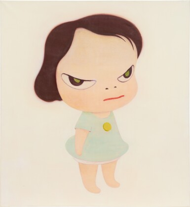
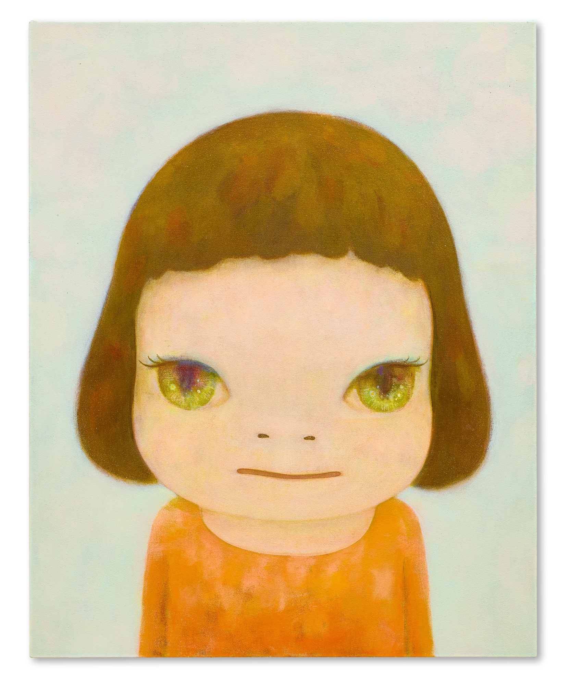
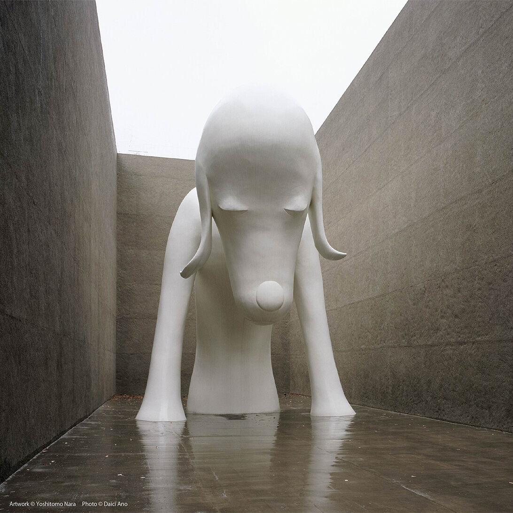
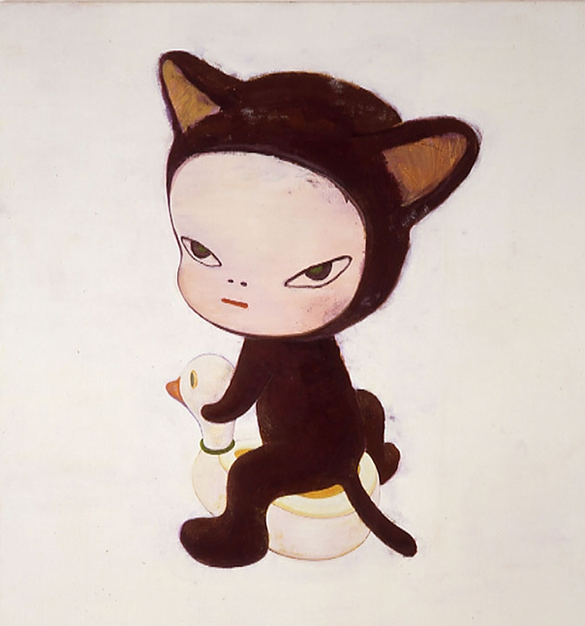
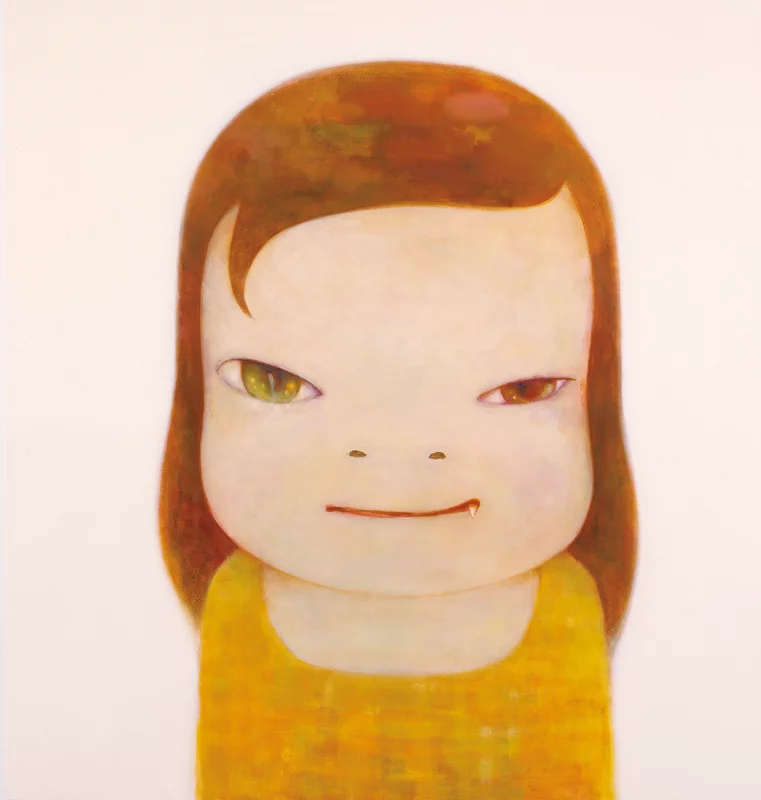
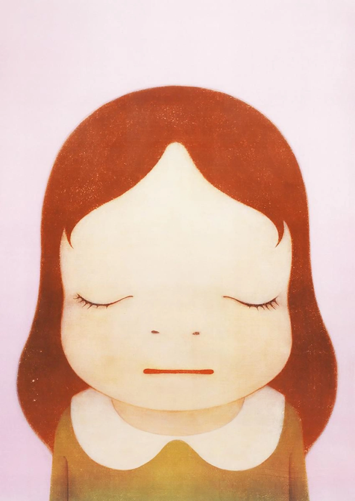
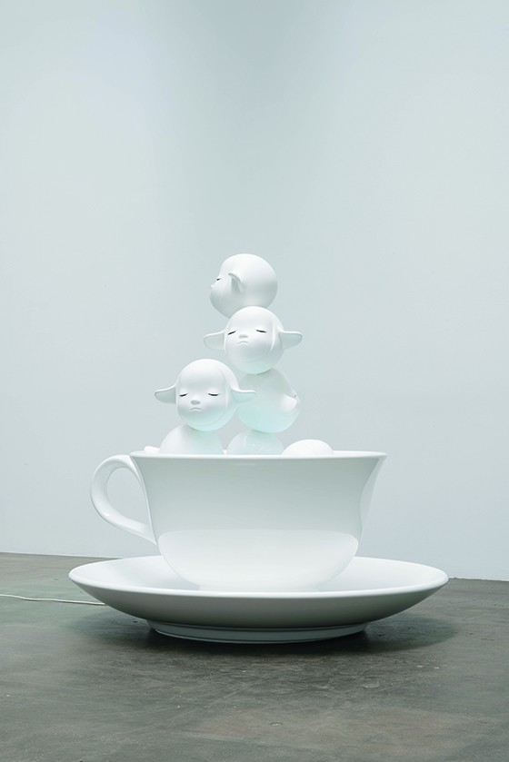
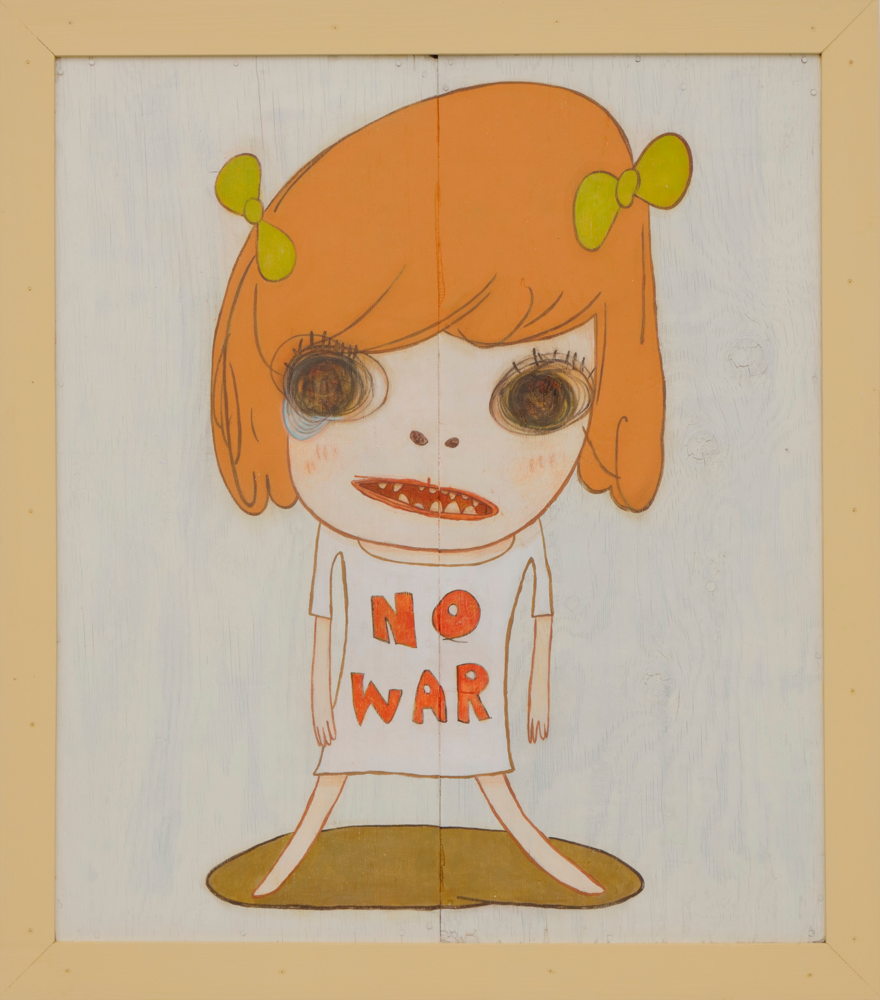
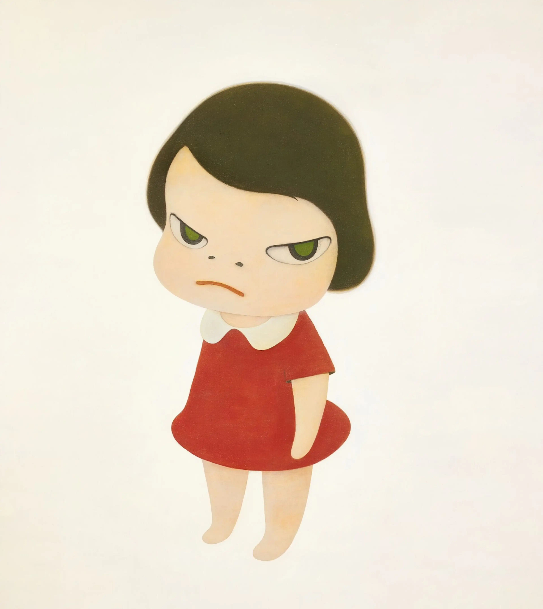

Nara creates his works directly and freely, without a go-to method.
He uses soft-hued, pastel colors with bold lines, as seen in anime characters in popular culture as well as contrasting images, colors, and emotions.
Nara stimulates distressing feelings through the subjects of his work through nightmarish features.
His work is displayed with various mediums (painting, sculpture, large scale installations, etc).

My favorite artwork is the first image, Knife Behind Back (2000) using acrylic on canvas. The illstration of the young girl exerts an unsettling
contrast between her age and her misdeed (which is hiding a knife behind her back). Through this piece, Nara hopes to convey the importance of examining
what lies behind mere appearances because it makes you interpret what the subject's intentions are. I think that this piece really represents his distinctive
style but also represents the global impact it had because it was so popular in the art market (it sold for $24.9 million). This is just an example of what he
is known for, which are powerful portraits with eyes that gaze back at the viewer.